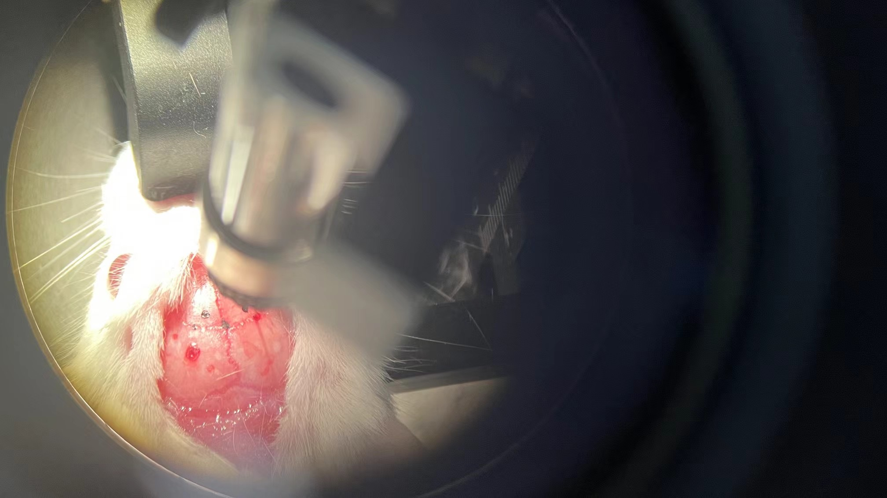
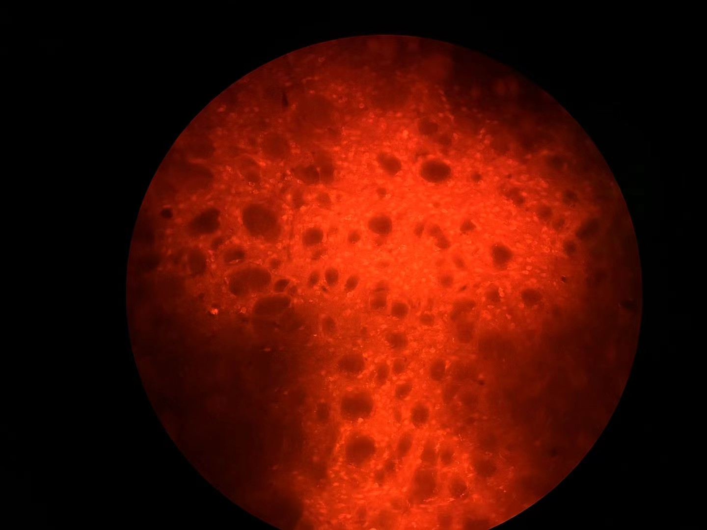
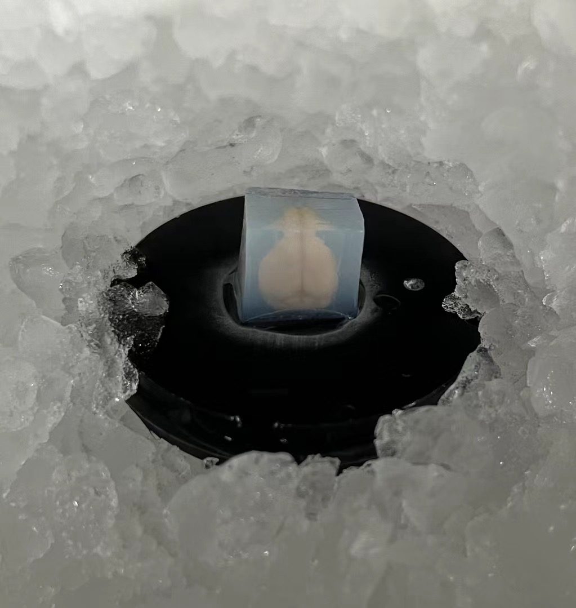

My First Impression of Neuroscience - Molecular Neuroscience
This page describes my research experience in Peking University when I was a high school student in RDFZ, Beijing.
Dr. Li, Chenjian (CJ) and Dr. Zheng, Sushuang (Sue) took me into the field of neuroscience at the age of 14, where I started to learn basic molecular experiments like PCR and Parkinson's mouse model. Many appreciations to CJ and Sue, not just my PIs but also my mentors, guiding me how to behave upright, curious to science, and polite. However, instead of molecular neuroscience, I later chose computational neuroscience in college, focusing on learning and memory and brain-machine interfaces.
What I've learned in molecular neuroscience
- Learned production process of adeno-associated viral, conducted intracranial injection of virus into mice's striatum and M1 cortex, and mouse perfusion with sagittal mouse brain slice.
- Performed serial mouse behavioral tests, including open field, catwalk, grid strength, and rota-rod.
- Conducted basic molecular biology techniques, including PCR, qPCR, cell culture, SDS-PAGE, and plasmid purification.
- Studied basic fly genetics and husbandry, and designed mating schemes.
- Screened flies with correct phenotypes for further crosses, isolated new variants, and performed fly behavior tests such as island assay and climbing assay.
I learned all of this under the guidance of CJ, Sue, Dr. Dai, Yuanyi, Dr. Abudujielili, Zuliayeti, Dr. Huang, Wanping, Yunyi Ding, and other lab members.



Related paper
Related publication: Yuanyi Dai et al., Self-inactivating AAV-CRISPR at different ages enables sustained amelioration of Huntington’s disease deficits in BAC226Q mice. Sci. Adv. 12, eaea8052 (2026). DOI:10.1126/sciadv.aea8052